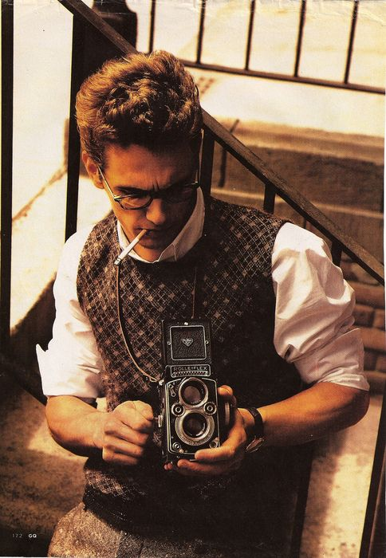

Introduction
Photography tutorials for beginners make it easy to understand camera settings, lighting, and basic composition. They simplify essential concepts so that anyone can start taking better photos right away.
Through clear examples and small exercises, these tutorials help beginners improve quickly and express their creativity. Whether with a phone or a camera, they make photography accessible to everyone.

"In a world older and more complete than ours they move finished and complete, gifted with extensions of the senses we have lost or never attained, living by voices we shall never hear."